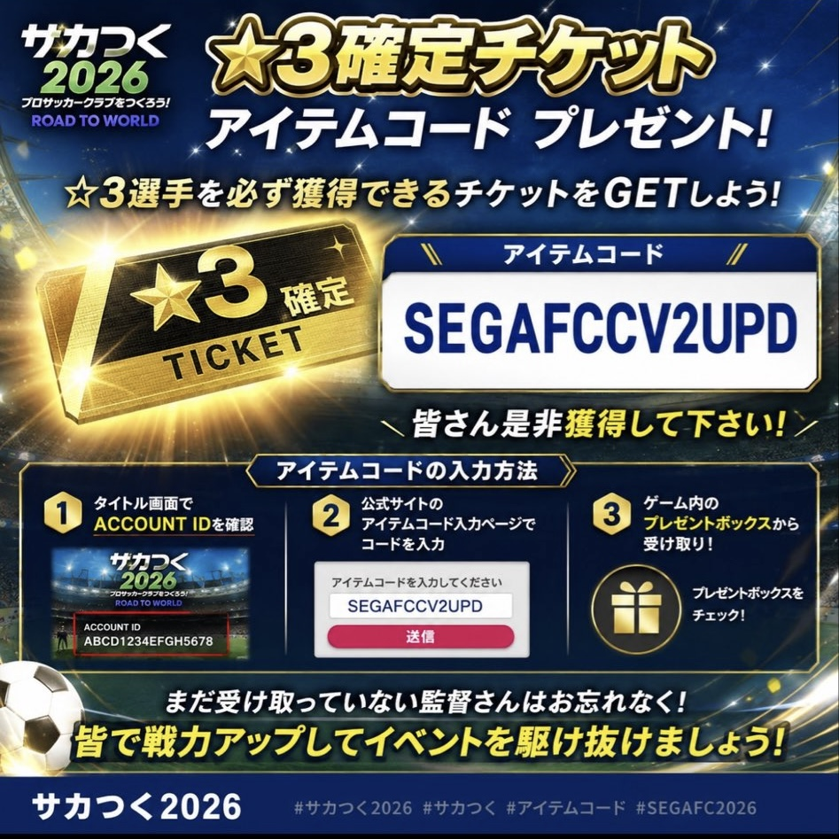
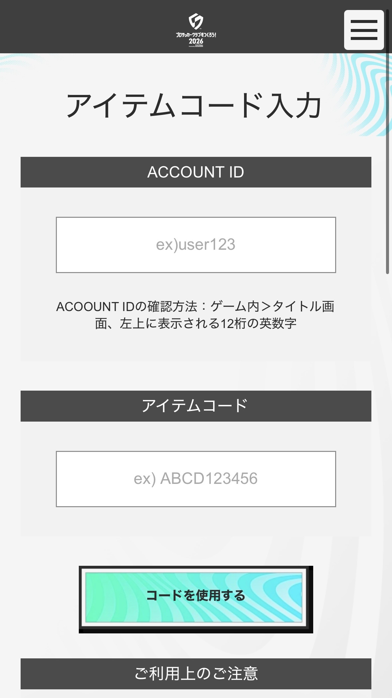
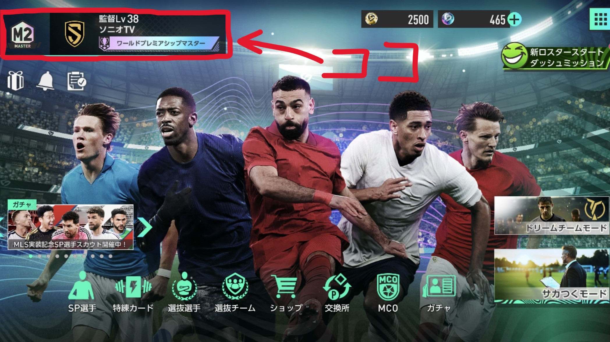
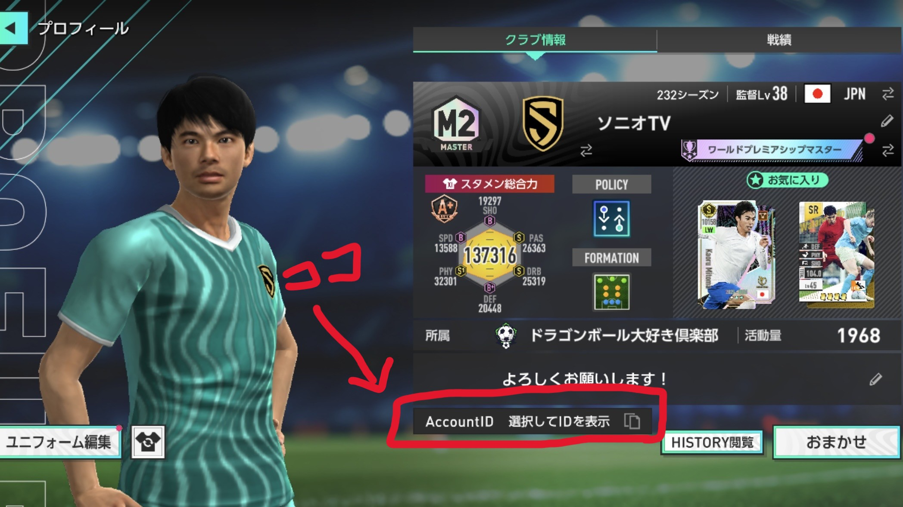
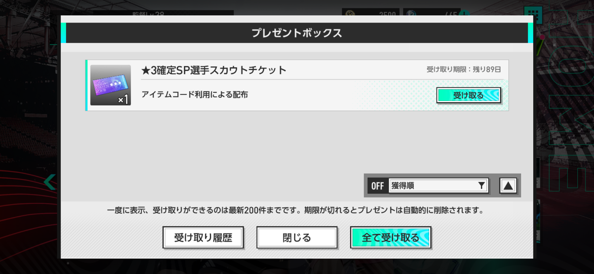
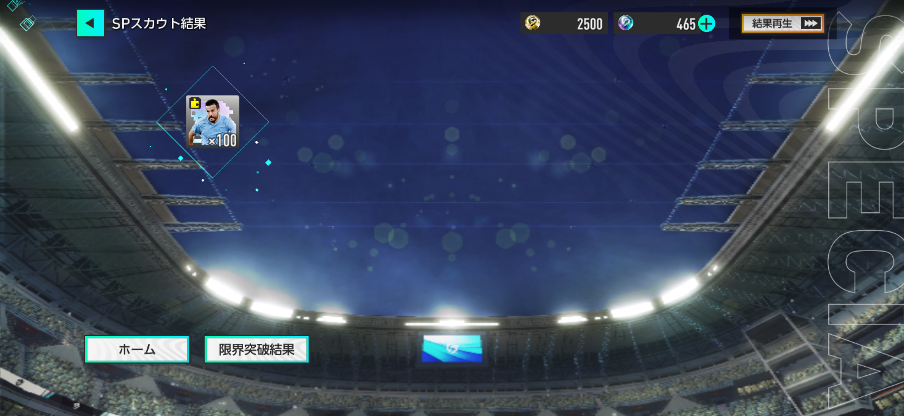

2026年6月14日更新
★3確定チケットの受け取り方法まとめ！アイテムコード入力・AccountID確認・SEGAアカウント設定を画像付きで解説
サカつく2026で、★3確定チケットが入手できるアイテムコードが配布されています。この記事では、アイテムコードのコピー、入力ページへの移動、AccountIDの確認方法、SEGAアカウント作成・メルマガ設定まで、画像付きでまとめます。

結論：アイテムコードをコピーして、専用ページで入力すればOK
受け取りに必要なのは、サカつく2026のAccountIDと、下記のアイテムコードです。スマホでも使いやすいように、コードはタップ・長押ししやすい表示にしています。
▼クリックすると該当の項目にジャンプできます
アイテムコードの入力手順
まずは、アイテムコード専用サイトへアクセスして、ゲーム内のAccountIDとアイテムコードを入力します。

| 入力項目 | 入力内容 | 補足 |
|---|---|---|
| AccountID | ゲーム内で確認した自分のID | ホーム画面左上から確認できます。コピーして貼り付けるのが安全です。 |
| アイテムコード | SEGAFCCV2UPD | この記事内のコピーボタンを使うと入力ミスを防げます。 |
| 最後の操作 | 「コードを使用する」をクリック | 入力内容を確認してから押しましょう。 |
サカつく2026のAccountID確認方法
アイテムコードを使うには、サカつく2026のAccountIDが必要です。ゲーム内から簡単に確認・コピーできます。


注意：AccountIDの入力ミスに気をつけよう
AccountIDを手入力すると間違えやすいので、ゲーム内のコピー機能を使うのがおすすめです。コード入力ページでは、AccountIDとアイテムコードの両方を確認してから「コードを使用する」を押しましょう。
プレゼントボックスで受け取り
コード入力が完了したら、ゲーム内のプレゼントボックスを確認しましょう。反映まで少し時間がかかる場合もあるので、表示されない場合はアプリの再起動も試してみてください。

SEGAアカウントの作成とメルマガ設定
今回のアイテムコードは、メルマガで届く形式です。アカウント作成時にメルマガ受信をオフにしていた場合、コードが届かない可能性があります。
| 項目 | やること | 補足 |
|---|---|---|
| 新規登録 | SEGAアカウントページから新規登録 | 上のボタンから公式ページへ移動できます。 |
| メールマガジン設定 | 登録時にメールマガジン設定をオン推奨 | コード配布を受け取るため、オンにしておくのがおすすめです。 |
| 登録後の変更 | SEGAアカウントにログインして「メールマガジン設定」から変更 | 作成後でも設定変更は可能です。 |
メルマガをオフにしていた人は要確認
アイテムコードはメルマガで届くため、受信設定をオフにしていると確認できない場合があります。今後も同様の配布がある可能性を考えると、サカつくを遊んでいる人はメルマガ設定を見直しておくと安心です。
実際に★3確定チケットを引いてみた結果
ちなみに、僕の結果はリアクションRWのペドロでした！ 無料で★3SP選手を狙える機会なので、まだ受け取っていない人は忘れずに回収しておきましょう。

まとめ：コードをコピーして、忘れずに★3確定チケットを受け取ろう
- アイテムコードはSEGAFCCV2UPD
- 入力ページはアイテムコード専用サイト
- AccountIDはゲーム内のホーム画面左上から確認
- SEGAアカウントのメルマガ設定も確認推奨
受け取り自体は難しくありませんが、AccountIDの確認やコード入力で迷いやすい部分があります。この記事を見ながら、コピーボタンとリンクボタンを活用して受け取ってみてください。